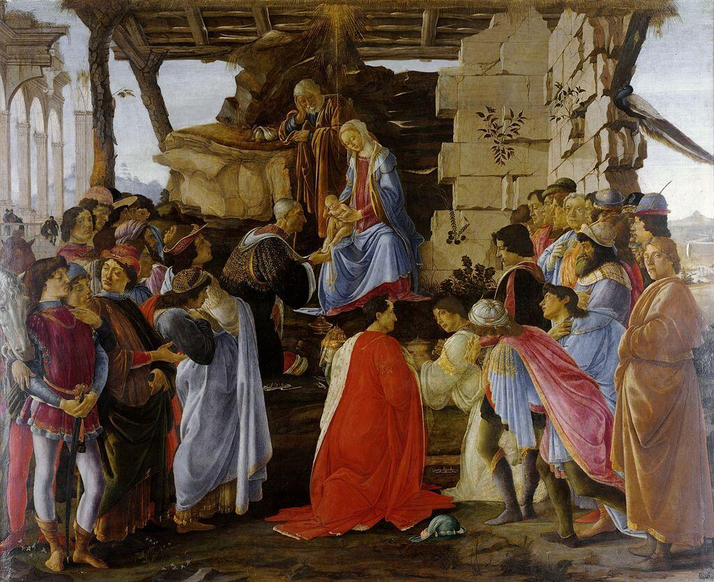

“文艺复兴的诞生”探讨
文艺复兴是指发生在14世纪到17世纪的一场反映新兴资产阶级要求的欧洲思想文化运动。在历史上文艺复兴被称为西欧近代三大思想解放运动，解开了近代欧洲历史的帷幕。那这一场意义深远的运动是怎么出现的？文艺复兴的原因是多方面的，这其中的爆发是通过历史慢慢地发酵。首先是十字军东征的开始，这一场东征一共发动了九次，持续时间近两百。十字军东征的出现让不少基督教徒留在了阿拉伯，同时也从阿拉伯带回许多科学发明。其中欧洲人就从阿拉伯那了解到了古希腊罗马时候先人的艺术和思哲，这就引起了后来学者要求恢复那时的文化与艺术，人文主义就这样开始萌芽。与此同时，中世纪时西欧的生产力开始提高，手工业与农业的发展促进了商品经济和贸易的繁荣。经济基础的发展促进上层建筑的发展，于是西欧大学兴起。大学本就是最初的修道院演变而来，所以其兴起对宗教思想的传播尤为重要，推动了宗教事业的发展，活跃了当代的社会思想文化，为接下来的人文主义运动打下了基础，提供思想基础与人才。
2023-4-22
